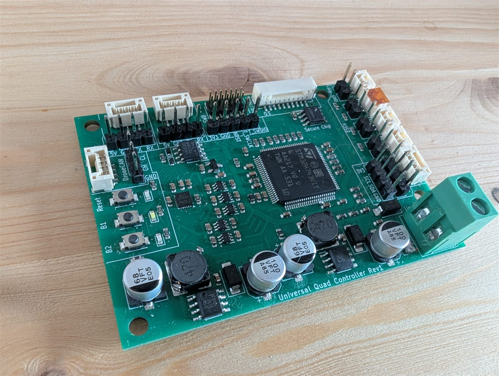

Embedded · PCB design · Telemetry
Flight Controller
A complete quadcopter system built from scratch: a custom STM32 flight controller, a matching power distribution board and a bench app for setup and live telemetry.

- Board
- Universal Quad Controller Rev1
- MCU
- STM32H743VIT6
- Power
- 3S–4S LiPo
- Motors
- 4 × ESC outputs
- Interfaces
- 2 × UART, GPS/MAG, DroneCAN, I²C, SWD
- Extras
- Secure chip, reset + 2 user buttons
The idea
To develop a flight controller that works, and that can later host more exotic control algorithms such as MPC, talk to a companion IPC and potentially connect to QGroundControl.
Flight controller
A universal quadcopter flight controller, designed with inspiration from the PX4 / Pixhawk flight controllers. The aim is the same open, modular approach, and owning the flight hardware.
- MCU: STM32H743VIT6
- On-board power supply: direct 3S–4S LiPo input, regulated 5 V and 3.3 V rails
- Four ESC outputs for X-configuration quads
- 1 kHz attitude control loop: cascaded PID (angle and rate)
- Receiver input: SBUS / ELRS on UART1
- Telemetry: UART2 for a wireless telemetry radio to the bench app
- GPS/compass port for position hold and navigation
- DroneCAN and I²C for expansion
- SWD for programming and debugging


Power distribution board
A simple, rugged PDB.


Bench app
What does the bench app do (setup, tuning, live data)? What is it written in? Add a screenshot when you have one.
Two ways to fly
The same board covers a simple setup and a fully connected one.


3D-printed concept
Running Claude with MCP and FreeCAD is highly recommendable if you're on a budget. This powerful open-source setup has let me optimize my drone frames at a surprisingly quick rate.

Results
What works? Show measurements, plots or flight videos.
What I learned
Key takeaways and what you would do differently next time.